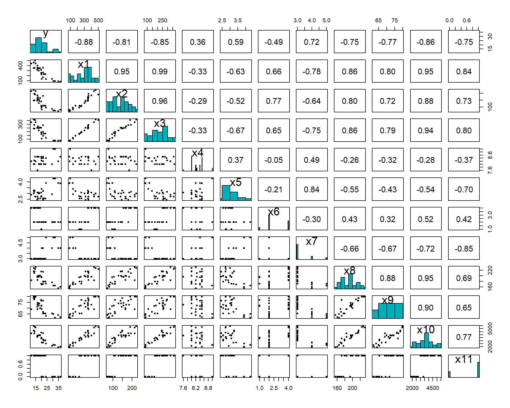

16 Selección de variables
En este capítulo se muestra como realizar selección de variables en un modelo de regresión lineal.
Akaike Information Criterion (\(AIC\))
El \(AIC\) se define como:
\[AIC = - 2 \times logLik + k \times n_{par},\]
donde \(logLik\) corresponde al valor de log-verosimilitud del modelo para el vector de parámetros \(\hat{\Theta}\), \(k\) es un valor de penalización por el exceso de parámetros y \(n_{par}\) corresponde al número de parámetros del modelo.
Se debe recordar siempre que:
- El mejor modelo es aquel que \(logLik\) ↑.
- El mejor modelo es aquel que \(AIC\) ↓.
Cuando el valor de penalización \(k=\log(n)\) entonces el \(AIC\) se llamada en \(BIC\) o \(SBC\) (Schwarz’s Bayesian criterion).
Funciones logLik y AIC
La función logLik sirve para obtener el valor de log-verosimilitud de un modelo y la función AIC entrega el Akaike Information Criterion. La estructura de ambas funciones se muestra a continuación.
Métodos
Los métodos para realizar selcción de variables se pueden clasificar de la siguiente manera:
- Todas las regresiones posibles.
- Selección de variables.
- Forward
- Backward
A continuación una imagen ilustrativa para entender ambos métodos.

Figure 16.1: Ilustración de los métodos.
- Un término ingresa al modelo si su presencia disminuye el \(AIC\).
- Un términa sale del modelo si su ausencia disminuye el \(AIC\).
Función stepAIC
La función stepAIC del paquete MASS (Ripley 2024) es útil para hacer selección de variables en un modelo de regresión. La estructura de la función se muestra a continuación.
stepAIC(object, scope, scale = 0,
direction = c("both", "backward", "forward"),
trace = 1, keep = NULL, steps = 1000, use.start = FALSE,
k = 2, ...)Algunos de los argumentos son:
object: un objeto con un modelo.scope: fórmula(s) con los límites de búsqueda.direction: los posibles valores sonboth,backward,forward.trace: valor lógico para indicar si se desea ver el paso a paso de la selección.k: valor de penalidad, por defecto es 2.
Ejemplo
En este ejemplo se busca encontrar un modelo de regresion lineal que explique la variable respuesta \(y\) en función de las covariables \(x_1\) a \(x_{11}\), los datos provienen del ejercicio 9.5 del libro de Montgomery, Peck and Vining (2003).
A continuación se muestra el encabezado de la base de datos y la definición de las variables.

Figure 16.2: Ilustración de la base de datos.
Nota: Type of transmission (1=automatic, 0=manual).
Solución
Antes de iniciar es necesario revisar si hay NA's y eliminarlos.
## y x1 x2 x3 x4 x5 x6 x7 x8 x9 x10 x11
## 22 21.47 360.0 180 290 8.4 2.45 2 3 214.2 76.3 4250 1
## 23 16.59 400.0 185 NA 7.6 3.08 4 3 196.0 73.0 3850 1
## 24 31.90 96.9 75 83 9.0 4.30 2 5 165.2 61.8 2275 0
## 25 29.40 140.0 86 NA 8.0 2.92 2 4 176.4 65.4 2150 0
## 26 13.27 460.0 223 366 8.0 3.00 4 3 228.0 79.8 5430 1El objeto datos tiene la base de datos sin las líneas con NA, lo mismo se hubiese podido realizar usando la función na.omit.
A continuación se muestran los diagramas de dispersión para las variables de la base de datos.
##
## Attaching package: 'psych'## The following object is masked from 'package:car':
##
## logit## The following object is masked from 'package:randomForest':
##
## outlier## The following objects are masked from 'package:ggplot2':
##
## %+%, alpha
Aplicación del método backward
Vamos a crear un modelo saturado, es decir, el modelo mayor a considerar.
##
## Call:
## lm(formula = y ~ ., data = datos)
##
## Residuals:
## Min 1Q Median 3Q Max
## -5.3441 -1.6711 -0.4486 1.4906 5.2508
##
## Coefficients:
## Estimate Std. Error t value Pr(>|t|)
## (Intercept) 17.339838 30.355375 0.571 0.5749
## x1 -0.075588 0.056347 -1.341 0.1964
## x2 -0.069163 0.087791 -0.788 0.4411
## x3 0.115117 0.088113 1.306 0.2078
## x4 1.494737 3.101464 0.482 0.6357
## x5 5.843495 3.148438 1.856 0.0799 .
## x6 0.317583 1.288967 0.246 0.8082
## x7 -3.205390 3.109185 -1.031 0.3162
## x8 0.180811 0.130301 1.388 0.1822
## x9 -0.397945 0.323456 -1.230 0.2344
## x10 -0.005115 0.005896 -0.868 0.3971
## x11 0.638483 3.021680 0.211 0.8350
## ---
## Signif. codes: 0 '***' 0.001 '**' 0.01 '*' 0.05 '.' 0.1 ' ' 1
##
## Residual standard error: 3.227 on 18 degrees of freedom
## Multiple R-squared: 0.8355, Adjusted R-squared: 0.7349
## F-statistic: 8.31 on 11 and 18 DF, p-value: 5.231e-05De la tabla anterior se puede pensar en que hay un efecto de enmascaramiento entre las variables ya que ninguna parece significativa marginalmente.
Se usa la función stepAIC y se elije trace=TRUE para obtener detalles del proceso de selección.
library(MASS) # Para poder usar la funcion stepAIC
modback <- stepAIC(full.model, trace=TRUE, direction="backward")## Start: AIC=78.96
## y ~ x1 + x2 + x3 + x4 + x5 + x6 + x7 + x8 + x9 + x10 + x11
##
## Df Sum of Sq RSS AIC
## - x11 1 0.465 187.87 77.036
## - x6 1 0.632 188.03 77.063
## - x4 1 2.418 189.82 77.346
## - x2 1 6.462 193.86 77.979
## - x10 1 7.836 195.24 78.190
## - x7 1 11.065 198.47 78.683
## <none> 187.40 78.962
## - x9 1 15.758 203.16 79.384
## - x3 1 17.770 205.17 79.679
## - x1 1 18.736 206.14 79.820
## - x8 1 20.047 207.45 80.011
## - x5 1 35.864 223.26 82.215
##
## Step: AIC=77.04
## y ~ x1 + x2 + x3 + x4 + x5 + x6 + x7 + x8 + x9 + x10
##
## Df Sum of Sq RSS AIC
## - x6 1 0.536 188.40 75.121
## - x4 1 2.363 190.23 75.411
## - x2 1 6.642 194.51 76.078
## - x10 1 7.985 195.85 76.285
## <none> 187.87 77.036
## - x7 1 14.124 201.99 77.211
## - x9 1 16.914 204.78 77.622
## - x3 1 17.815 205.68 77.754
## - x1 1 18.280 206.15 77.822
## - x8 1 20.301 208.17 78.114
## - x5 1 36.370 224.24 80.345
##
## Step: AIC=75.12
## y ~ x1 + x2 + x3 + x4 + x5 + x7 + x8 + x9 + x10
##
## Df Sum of Sq RSS AIC
## - x4 1 3.451 191.85 73.666
## - x2 1 6.932 195.33 74.205
## - x10 1 9.351 197.75 74.574
## <none> 188.40 75.121
## - x7 1 14.473 202.87 75.342
## - x3 1 17.802 206.20 75.830
## - x9 1 18.146 206.55 75.880
## - x1 1 18.780 207.18 75.972
## - x8 1 21.244 209.65 76.326
## - x5 1 39.332 227.73 78.809
##
## Step: AIC=73.67
## y ~ x1 + x2 + x3 + x5 + x7 + x8 + x9 + x10
##
## Df Sum of Sq RSS AIC
## - x2 1 10.780 202.63 73.306
## - x7 1 11.113 202.97 73.355
## <none> 191.85 73.666
## - x10 1 14.988 206.84 73.923
## - x1 1 16.602 208.46 74.156
## - x9 1 18.072 209.92 74.366
## - x3 1 21.314 213.17 74.826
## - x8 1 28.835 220.69 75.867
## - x5 1 40.323 232.18 77.389
##
## Step: AIC=73.31
## y ~ x1 + x3 + x5 + x7 + x8 + x9 + x10
##
## Df Sum of Sq RSS AIC
## - x7 1 10.457 213.09 72.815
## - x3 1 10.595 213.23 72.835
## - x1 1 11.998 214.63 73.032
## - x9 1 12.643 215.28 73.122
## - x10 1 13.887 216.52 73.295
## <none> 202.63 73.306
## - x8 1 27.665 230.30 75.145
## - x5 1 30.191 232.82 75.472
##
## Step: AIC=72.82
## y ~ x1 + x3 + x5 + x8 + x9 + x10
##
## Df Sum of Sq RSS AIC
## - x3 1 4.8720 217.96 71.494
## - x9 1 5.2049 218.29 71.539
## - x1 1 5.3212 218.41 71.555
## <none> 213.09 72.815
## - x10 1 18.3677 231.46 73.296
## - x5 1 23.3458 236.44 73.934
## - x8 1 26.0316 239.12 74.273
##
## Step: AIC=71.49
## y ~ x1 + x5 + x8 + x9 + x10
##
## Df Sum of Sq RSS AIC
## - x1 1 0.765 218.73 69.599
## - x9 1 5.863 223.82 70.290
## <none> 217.96 71.494
## - x10 1 20.291 238.25 72.164
## - x5 1 23.020 240.98 72.506
## - x8 1 31.634 249.59 73.559
##
## Step: AIC=69.6
## y ~ x5 + x8 + x9 + x10
##
## Df Sum of Sq RSS AIC
## - x9 1 5.097 223.82 68.290
## <none> 218.73 69.599
## - x5 1 40.404 259.13 72.684
## - x8 1 57.407 276.13 74.591
## - x10 1 135.105 353.83 82.029
##
## Step: AIC=68.29
## y ~ x5 + x8 + x10
##
## Df Sum of Sq RSS AIC
## <none> 223.82 68.290
## - x5 1 36.314 260.14 70.800
## - x8 1 52.960 276.78 72.661
## - x10 1 194.838 418.66 85.076Para obtener un resumen del proceso se usa:
## Stepwise Model Path
## Analysis of Deviance Table
##
## Initial Model:
## y ~ x1 + x2 + x3 + x4 + x5 + x6 + x7 + x8 + x9 + x10 + x11
##
## Final Model:
## y ~ x5 + x8 + x10
##
##
## Step Df Deviance Resid. Df Resid. Dev AIC
## 1 18 187.4007 78.96155
## 2 - x11 1 0.4648362 19 187.8655 77.03587
## 3 - x6 1 0.5356445 20 188.4012 75.12128
## 4 - x4 1 3.4514854 21 191.8526 73.66591
## 5 - x2 1 10.7796848 22 202.6323 73.30587
## 6 - x7 1 10.4571693 23 213.0895 72.81545
## 7 - x3 1 4.8720101 24 217.9615 71.49363
## 8 - x1 1 0.7654631 25 218.7270 69.59881
## 9 - x9 1 5.0970905 26 223.8241 68.28989Para ver la tabla de resultados del modelo modback.
##
## Call:
## lm(formula = y ~ x5 + x8 + x10, data = datos)
##
## Residuals:
## Min 1Q Median 3Q Max
## -4.6101 -1.9868 -0.6613 2.0369 5.8811
##
## Coefficients:
## Estimate Std. Error t value Pr(>|t|)
## (Intercept) 4.590404 11.771925 0.390 0.6998
## x5 2.597240 1.264562 2.054 0.0502 .
## x8 0.217814 0.087817 2.480 0.0199 *
## x10 -0.009485 0.001994 -4.757 6.38e-05 ***
## ---
## Signif. codes: 0 '***' 0.001 '**' 0.01 '*' 0.05 '.' 0.1 ' ' 1
##
## Residual standard error: 2.934 on 26 degrees of freedom
## Multiple R-squared: 0.8035, Adjusted R-squared: 0.7808
## F-statistic: 35.44 on 3 and 26 DF, p-value: 2.462e-09Aplicación del método forward
Para aplicar este metodo se debe crear un modelo vacío (empty.model) del cual iniciará el proceso. Es necesario definir un punto final de búsqueda, ese punto es una fórmula que en este caso llamaremos horizonte. A continuación el codigo.
empty.model <- lm(y ~ 1, data=datos)
horizonte <- formula(y ~ x1 + x2 + x3 + x4 + x5 + x6 + x7 + x8 + x9 + x10 + x11)Se usa la función stepAIC y se elije trace=FALSE para que NO se muestren los detalles del proceso de selección.
## Stepwise Model Path
## Analysis of Deviance Table
##
## Initial Model:
## y ~ 1
##
## Final Model:
## y ~ x1 + x4
##
##
## Step Df Deviance Resid. Df Resid. Dev AIC
## 1 29 1139.1050 111.10402
## 2 + x1 1 866.49528 28 272.6097 70.20532
## 3 + x4 1 18.57161 27 254.0381 70.08861Para ver la tabla de resultados del modelo modforw.
##
## Call:
## lm(formula = y ~ x1 + x4, data = datos)
##
## Residuals:
## Min 1Q Median 3Q Max
## -6.5011 -2.1243 -0.3884 1.9964 6.9582
##
## Coefficients:
## Estimate Std. Error t value Pr(>|t|)
## (Intercept) 7.179421 18.787955 0.382 0.705
## x1 -0.044479 0.005225 -8.513 3.98e-09 ***
## x4 3.077228 2.190294 1.405 0.171
## ---
## Signif. codes: 0 '***' 0.001 '**' 0.01 '*' 0.05 '.' 0.1 ' ' 1
##
## Residual standard error: 3.067 on 27 degrees of freedom
## Multiple R-squared: 0.777, Adjusted R-squared: 0.7605
## F-statistic: 47.03 on 2 and 27 DF, p-value: 1.594e-09Como la variable \(x_4\) no es significativa, entonces se puede refinar o actualizar el modelo modforw sacando \(x_4\), esto se puede realizar fácilmente por medio de la función update así:
##
## Call:
## lm(formula = y ~ x1, data = datos)
##
## Residuals:
## Min 1Q Median 3Q Max
## -6.6063 -2.0276 -0.0457 1.4531 7.0213
##
## Coefficients:
## Estimate Std. Error t value Pr(>|t|)
## (Intercept) 33.490010 1.535476 21.811 < 2e-16 ***
## x1 -0.047026 0.004985 -9.434 3.43e-10 ***
## ---
## Signif. codes: 0 '***' 0.001 '**' 0.01 '*' 0.05 '.' 0.1 ' ' 1
##
## Residual standard error: 3.12 on 28 degrees of freedom
## Multiple R-squared: 0.7607, Adjusted R-squared: 0.7521
## F-statistic: 89 on 1 and 28 DF, p-value: 3.429e-10En este enlace usted podrá encontrar la respuesta que le dieron a Audrey al preguntar “Why stepAIC gives a model with insignificant variables?”.
Aplicación del método both
Para aplicar este método se debe crear un modelo vacío del cual iniciará el proceso. Es necesario definir un punto final de búsqueda, ese punto es una formula que en este caso llamaremos horizonte. A continuación el código.
## Stepwise Model Path
## Analysis of Deviance Table
##
## Initial Model:
## y ~ 1
##
## Final Model:
## y ~ x1 + x4
##
##
## Step Df Deviance Resid. Df Resid. Dev AIC
## 1 29 1139.1050 111.10402
## 2 + x1 1 866.49528 28 272.6097 70.20532
## 3 + x4 1 18.57161 27 254.0381 70.08861El modelo modboth y modforw son el mismo.
A continuación vamos a realizar una comparación de los modelos obtenidos.
Comparando \(R^2_{Adj}\)
Para extraer el \(R^2_{Adj}\) de la tabla de resultados se usa:
## [1] 0.7808368## [1] 0.7521337
Funciones addterm y dropterm
Estas dos funciones pertenecen al paquete MASS (Ripley 2024) y son útiles para agregar/quitar 1 variable con respecto al modelo ingresado. A continuación la estructura de las funciones.
Ejemplo
Usando datos anteriores ajuste un modelo para explicar y en función de x2 y x5, luego use addterm para determinar cual de las variables x1, x4 y x6 se debería ingresar.
mod1 <- lm(y ~ x2 + x5, data=datos)
maximo <- formula(~ x1 + x2 + x3 + x4 + x5 + x6)
addterm(mod1, scope=maximo)## Single term additions
##
## Model:
## y ~ x2 + x5
## Df Sum of Sq RSS AIC
## <none> 353.19 79.974
## x1 1 88.511 264.67 73.319
## x3 1 47.296 305.89 77.661
## x4 1 19.915 333.27 80.233
## x6 1 19.452 333.73 80.274De la salida anterior se ve que ingresar x1 mejoraría el modelo porque lo llevaría de un \(AIC=79.974\) a uno con \(AIC=73.319\).
Paquete mixlm
El paquete mixlm creado por Liland (2023) contiene un buen número de funciones para modelación. Algunas de las funciones a destacar son forward, backward, stepWise.
lm y glm que se pueden confundir con las funciones lm y glm del paquete stats. Por esta razón el usuario debe tener cuidado de usar la apropiada, en estos casos se recomienda usar stats::lm(y ~ x) o mixlm::lm(y ~ x) para obligar a R a que use la que el usuario desea.
Ejemplo
En este ejemplo se retoman los datos del ejercicio 9.5 del libro de Montgomery, Peck and Vining (2003). En este ejemplo se busca encontrar un modelo de regresion lineal que explique la variable respuesta \(y\) en función de las covariables \(x_1\) a \(x_{11}\), usando el modelo backward y que todas las variables sean significativas a un nivel del 4%.
Para realizar lo solicitado se usa el siguiente código:
library(MPV) # Aqui estan los datos
datos <- table.b3[-c(23, 25), ] # Eliminando 2 observaciones con NA
modelo <- lm(y ~ x1 + x2 + x3 + x4 + x5 + x6 + x7 + x8 + x9 + x10 + x11,
data=datos)
library(mixlm)
backward(modelo, alpha=0.04)## Backward elimination, alpha-to-remove: 0.04
##
## Full model: y ~ x1 + x2 + x3 + x4 + x5 + x6 + x7 + x8 + x9 + x10 + x11
##
## Step RSS AIC R2pred Cp F value Pr(>F)
## x11 1 187.87 77.036 0.41925 10.04465 0.0446 0.83503
## x6 2 188.40 75.121 0.51334 8.09610 0.0542 0.81844
## x4 3 191.85 73.666 0.53495 6.42762 0.3664 0.55178
## x2 4 202.63 73.306 0.54991 5.46301 1.1799 0.28968
## x7 5 213.09 72.815 0.61766 4.46743 1.1353 0.29819
## x3 6 217.96 71.494 0.63898 2.93539 0.5259 0.47566
## x1 7 218.73 69.599 0.66089 1.00892 0.0843 0.77406
## x9 8 223.82 68.290 0.73638 -0.50150 0.5826 0.45244
## x5 9 260.14 70.800 0.70705 0.98652 4.2184 0.05017 .
## ---
## Signif. codes: 0 '***' 0.001 '**' 0.01 '*' 0.05 '.' 0.1 ' ' 1##
## Call:
## lm(formula = y ~ x8 + x10, data = datos)
##
## Coefficients:
## (Intercept) x8 x10
## 16.23496 0.21234 -0.01022De la salida anterior vemos que el modelo final es y ~ x8 + x10. Si comparamos este modelo con el obtenido al usar la función stepAIC, vemos que se eliminó la variable x5 ya que su valor-P era 5.02%, superior al límite definido aquí del 4%.
Paquete leaps
El paquete leaps creado por Lumley (2020) está basado en Fortran y es útil cuando nos interese encontrar subconjuntos de covariables para optimizar las características de un modelo.
La función regsubsets realiza una búsqueda exhaustiva de los mejores subconjuntos de variables \(x\) para explicar \(y\). La búsqueda utiliza un algoritmo eficiente de ramificación y unión.
La estructura de la función es la siguiente:
Algunos de los parámetros más usuados en la función son:
x: fórmula usual.data: marco de datos.nbest: número de subconjuntos de cada tamaño a guardar.nvmax: máximo número de subconjuntos a evaluar.
Ejemplo
En este ejemplo vamos a usar la base de datos mtcars para encontrar los dos mejores modelos con 1, 2, 3 y 4 covariables para explicar mpg en función de las variables disp, hp, wt, qsec.
Para hacer la búsqueda usamos el siguiente código. nbest=2 porque queremos los mejores dos modelos con cada número de covariables posible.
library(leaps)
model_subset <- regsubsets(mpg ~ disp + hp + wt + qsec,
data=mtcars, nbest=2, nvmax=13)El model_subset es un objeto de la clase regsubsets y es posible usar la función S3 summary para objetos de esa clase. A continuación los elementos que componen summary.
## [1] "which" "rsq" "rss" "adjr2" "cp" "bic" "outmat" "obj"El primer elemento del summary se obtiene así:
## (Intercept) disp hp wt qsec
## 1 TRUE FALSE FALSE TRUE FALSE
## 1 TRUE TRUE FALSE FALSE FALSE
## 2 TRUE FALSE TRUE TRUE FALSE
## 2 TRUE FALSE FALSE TRUE TRUE
## 3 TRUE FALSE TRUE TRUE TRUE
## 3 TRUE TRUE TRUE TRUE FALSE
## 4 TRUE TRUE TRUE TRUE TRUEDe las dos primeras líneas de la salida anterior se observa que los dos mejores modelos con una sola covariable son mpg ~ wt y mpg ~ disp. De forma similar, los dos mejores modelos con dos covariables son mpg ~ hp + wt y mpg ~ wt + qsec. De forma análoga se interpretan las líneas de la salida anterior.
Es posible mostrar gráficamente los resultados anteriores usando el método S3 plot para objetos de la clase regsubsets. A continuación la estructura de la función plot. El parámetro scale nos permite explorar los mejores modelos para cada uno de los cuatro criterios \(BIC\), \(C_p\), \(R^2_{adj}\) y \(R^2\).
plot(x, labels=obj$xnames, main=NULL,
scale=c("bic", "Cp", "adjr2", "r2"),
col=gray(seq(0, 0.9, length = 10)),...)A continuación el código para mostrar gráficamente los mejores modelos usando el criterio \(R^2_{adj}\) y \(BIC\).
par(mfrow=c(1, 2))
plot(model_subset, scale="adjr2", main=expression(R[Adj]^2))
plot(model_subset, scale="bic", main="BIC")
De la figura de la izquierda vemos que:
- El modelo con mayor \(R^2_{adj}\) es
mpg ~ hp + wt + qsec. - El modelo
mpg ~ hp + wttiene igual \(R^2_{adj}\) quempg ~ wt + qsec. - El mejor modelo con una sola covariable es
mpg ~ wt.
La figura de la derecha se puede analizar de forma análoga.
Para obtener los valores exacto de \(R^2_{adj}\) y \(BIC\) mostrados en la figura anterior se usa el siguiente código.
## [1] 0.7445939 0.7089548 0.8148396 0.8144448 0.8170643 0.8082829 0.8107212## [1] -37.79462 -33.61466 -45.70597 -45.63781 -43.74996 -42.24960 -40.35723Para encontrar el modelo con el mejor \(BIC\) se puede usar lo siguiente:
## [1] 3Para determinar la estructura del modelo 3 identificado en la salida anterior usamos:
## (Intercept) disp hp wt qsec
## TRUE FALSE TRUE TRUE FALSEFunciones para el curso Estadística II
El curso de Estadística II tiene unas funciones especiales (myStepwise y myBackward) para realizar la selección de variables según se ha explicado en clase.
Para accerder a estas funciones se corre el siguiente código:
Ejemplo
En este ejemplo se busca encontrar un modelo de regresion lineal que explique la variable respuesta \(y\) en función de las covariables \(x_1\) a \(x_{11}\), los datos provienen del ejercicio 9.5 del libro de Montgomery, Peck and Vining (2003).
A continuación se muestra el encabezado de la base de datos y la definición de las variables.
Figure 16.3: Ilustración de la base de datos.
Nota: Type of transmission (1=automatic, 0=manual).
Solución
Antes de iniciar es necesario revisar si hay NA's y eliminarlos.
## y x1 x2 x3 x4 x5 x6 x7 x8 x9 x10 x11
## 22 21.47 360.0 180 290 8.4 2.45 2 3 214.2 76.3 4250 1
## 23 16.59 400.0 185 NA 7.6 3.08 4 3 196.0 73.0 3850 1
## 24 31.90 96.9 75 83 9.0 4.30 2 5 165.2 61.8 2275 0
## 25 29.40 140.0 86 NA 8.0 2.92 2 4 176.4 65.4 2150 0
## 26 13.27 460.0 223 366 8.0 3.00 4 3 228.0 79.8 5430 1El objeto datos tiene la base de datos sin las líneas con NA, lo mismo se hubiese podido realizar usando la función na.omit.
A continuación se muestran los diagramas de dispersión para las variables de la base de datos. 
Ahora vamos a ajustar el modelo saturado, es decir, el modelo con todas las covariables.
Para aplicar el modelo Forward visto en clase usamos la siguiente instrucción.
## The following objects are masked _by_ .GlobalEnv:
##
## x1, x2, y## Estimate Std. Error t value Pr(>|t|)
## (Intercept) 20.03833 1.144254 17.51214 5.810909e-17
##
## S = 6.267335, R-sq = 0.000000, R-sq(adj) = 0.000000, C-p = 81.412038
## =====Para ver un resumen del modelo resultante de Forward hacemos lo siguiente:
##
## Call:
## lm(formula = initial.model)
##
## Residuals:
## Min 1Q Median 3Q Max
## -8.8383 -3.6058 -0.7383 1.4542 16.4617
##
## Coefficients:
## Estimate Std. Error t value Pr(>|t|)
## (Intercept) 20.038 1.144 17.51 <2e-16 ***
## ---
## Signif. codes: 0 '***' 0.001 '**' 0.01 '*' 0.05 '.' 0.1 ' ' 1
##
## s: 6.267 on 29 degrees of freedomPara aplicar el modelo Backward visto en clase usamos la siguiente instrucción.
## -------------STEP 1 -------------
## The drop statistics :
## Single term deletions
##
## Model:
## y ~ x1 + x2 + x3 + x4 + x5 + x6 + x7 + x8 + x9 + x10 + x11
## Df Sum of Sq RSS AIC F value Pr(>F)
## <none> 187.40 78.962
## x1 1 18.736 206.14 79.820 1.7996 0.1964
## x2 1 6.462 193.86 77.979 0.6207 0.4411
## x3 1 17.770 205.17 79.679 1.7069 0.2078
## x4 1 2.418 189.82 77.346 0.2323 0.6357
## x5 1 35.864 223.26 82.215 3.4447 0.0799 .
## x6 1 0.632 188.03 77.063 0.0607 0.8082
## x7 1 11.065 198.47 78.683 1.0628 0.3162
## x8 1 20.047 207.45 80.011 1.9256 0.1822
## x9 1 15.758 203.16 79.384 1.5136 0.2344
## x10 1 7.836 195.24 78.190 0.7526 0.3971
## x11 1 0.465 187.87 77.036 0.0446 0.8350
## ---
## Signif. codes: 0 '***' 0.001 '**' 0.01 '*' 0.05 '.' 0.1 ' ' 1
##
## --------
## Term dropped in step 1 : x11
## --------
.
.
.
## -------------STEP 9 -------------
## The drop statistics :
## Single term deletions
##
## Model:
## y ~ x5 + x8 + x10
## Df Sum of Sq RSS AIC F value Pr(>F)
## <none> 228.85 70.955
## x5 1 38.934 267.78 73.982 4.7636 0.03761 *
## x8 1 59.013 287.86 76.296 7.2203 0.01199 *
## x10 1 245.912 474.76 92.306 30.0876 7.375e-06 ***
## ---
## Signif. codes: 0 '***' 0.001 '**' 0.01 '*' 0.05 '.' 0.1 ' ' 1Para ver un resumen del modelo resultante de Backward hacemos lo siguiente:
##
## Call:
## lm(formula = y ~ x5 + x8 + x10)
##
## Residuals:
## Min 1Q Median 3Q Max
## -4.512 -1.945 -0.631 1.931 6.003
##
## Coefficients:
## Estimate Std. Error t value Pr(>|t|)
## (Intercept) 5.010946 11.275042 0.444 0.6601
## x5 2.625031 1.202720 2.183 0.0376 *
## x8 0.211874 0.078850 2.687 0.0120 *
## x10 -0.009334 0.001702 -5.485 7.37e-06 ***
## ---
## Signif. codes: 0 '***' 0.001 '**' 0.01 '*' 0.05 '.' 0.1 ' ' 1
##
## s: 2.859 on 28 degrees of freedom
## Multiple R-squared: 0.8151,
## Adjusted R-squared: 0.7953
## F-statistic: 41.14 on 3 and 28 DF, p-value: 2.156e-10